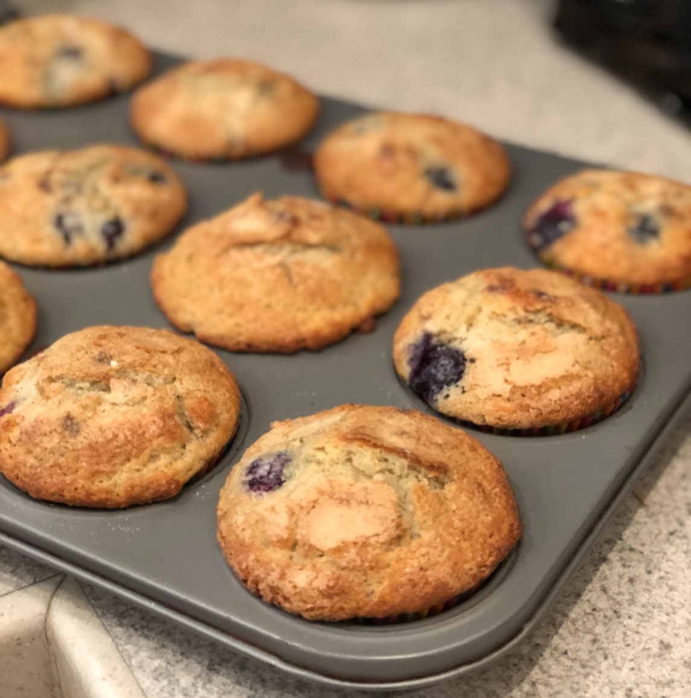

I love to cook and started this blog as a way to save and share all of my favorite recipes!
However, I hate scrolling forever to get to the recipes, so this site will have just the recipes.
Contact me: saraturns@gmail.com
Yield: 12 muffins
Position a rack in the center of the oven. Preheat the oven to 400 degrees F. Grease a standard 12-muffin pan or line with paper cups.
2 cups all-purpose flour
1 tablespoon baking powder
1/2 teaspoon salt
1/4 teaspoon ground cardamom
2 large eggs
1 cup whole milk
2/3 cup packed light brown sugar
8 tablespoons (1 stick) warm melted salted butter
1 teaspoon vanilla
Add to the flour and stir until just combined. Add 1 1/2 cups frozen blueberries and divide batter among muffin cups. Sprinkle each one generously with granulated sugar and a pinch of cardamom (or more to taste). Bake 16-18 minutes or until a toothpick comes out clean when inserted in the center. The tops will be golden, crispy and sweet. Serve as soon as possible.
